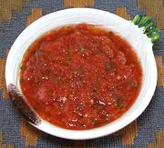

|
Llajwa - Bolivian SalsaBolivia - Llajwa | ||||
| Makes: Effort: Sched: DoAhead: |
2 cup ** 25 min Best |
This is the "must have" condiment on the Bolivian table - used with just about everything. I really like this salsa as I have given it, but then I really like Quilliquiña and Rocotos. | |||
|
|
1 2 2 1/2 |
# T t |
Tomatoes, ripe Rocoto Chili (1) Quiliquiña (2) Salt |
Two seeded Manzanas give this sauce rather moderate heat. Feel free to vary the proportions to your taste. Do use the very best ripe tomatoes you can get your hands on. Make - (25 min)
|